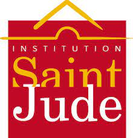
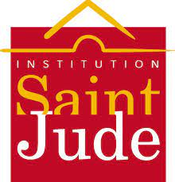

Stage d'observation : 3DFTLab
Stage d'observation dans l'impression 3D.
Maîtrise des logiciels de modélisation :
- Fusion 360
- Sketchup 3D
- Autocad
Lors de cette expérience j'ai pu perfectionner mes connaissances dans la modélisation 3D. En utilisant différents logiciels pour modéliser des pièces plus ou moins complexes.